Data visualization in Python
Contents
- Get familiar with most important types of plots for data visualization.
- Learn how to generate such pluts with the seaborn Python package.
- seaborn: bulit on top of matplotlib, which in turn is built on top of NumPy.
- Very well integrated with pandas data frames and easier to use than matplotlib (at the price of reduced fine-grained control).
1 Preparations
2 The matplotlib object hierarchy
- Level 1: Figure (always exactly one)
- Level 2: Axes (= figure panel, possibly more than one).
- Level 3: x- and y-axis, title, etc.

Generating a figure with 2 x 3 axes
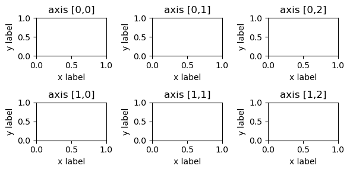
Generating a figure with a custom layout
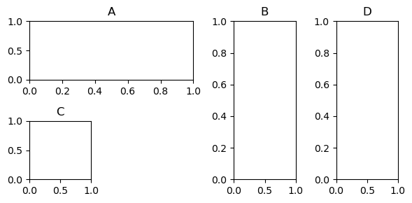
Saving a figure to a file
Load Data To Construct Seaborn Plots
- Seaborn naturally interfaces with pandas data frames
- Here: datasets from the seaborn package
['anagrams', 'anscombe', 'attention', 'brain_networks', 'car_crashes', 'diamonds', 'dots', 'dowjones', 'exercise', 'flights', 'fmri', 'geyser', 'glue', 'healthexp', 'iris', 'mpg', 'penguins', 'planets', 'seaice', 'taxis', 'tips', 'titanic']| total | speeding | alcohol | not_distracted | no_previous | ins_premium | ins_losses | abbrev | |
|---|---|---|---|---|---|---|---|---|
| 0 | 18.8 | 7.332 | 5.640 | 18.048 | 15.040 | 784.55 | 145.08 | AL |
| 1 | 18.1 | 7.421 | 4.525 | 16.290 | 17.014 | 1053.48 | 133.93 | AK |
| 2 | 18.6 | 6.510 | 5.208 | 15.624 | 17.856 | 899.47 | 110.35 | AZ |
| 3 | 22.4 | 4.032 | 5.824 | 21.056 | 21.280 | 827.34 | 142.39 | AR |
| 4 | 12.0 | 4.200 | 3.360 | 10.920 | 10.680 | 878.41 | 165.63 | CA |
3 Visualizing individual numeric values
Bar plots
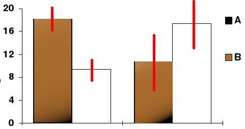
- Each bar represents one numeric value.
- Represented numeric values can be individual measurements or summary statistics such as means or medians.
- Error bars represent estimated uncertainty of the numeric value.
- Uncertainty estimates can, e.g., be confidence intervals or standard deviations.
Example: fractions of Titanic survivors split by class and gender
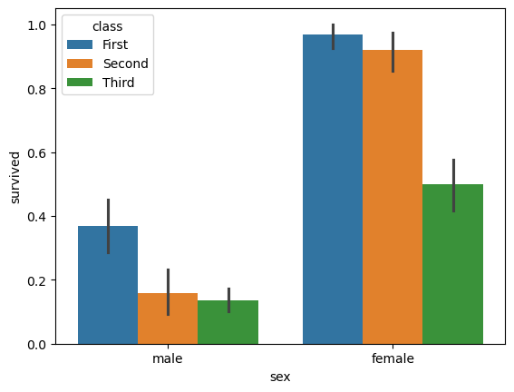
4 Visualizing distributions of individual variables
Histograms

- A histogram represents the value frequency distribution of a variable using bars.
- The \(x\)-axis represents data bins (intervals), the \(y\)-axis represents the frequency of observations in each bin.
- The height of each bar corresponds to the number of data points within that bin.
- Histograms help to visually identify patterns such as skewness, modality, and dispersion in a dataset.
- Can also be used to visualize discrete distributions (no binning necessary).
Example: plot petal length distribution in iris dataset, colored by species
| sepal_length | sepal_width | petal_length | petal_width | species | |
|---|---|---|---|---|---|
| 0 | 5.1 | 3.5 | 1.4 | 0.2 | setosa |
| 1 | 4.9 | 3.0 | 1.4 | 0.2 | setosa |
| 2 | 4.7 | 3.2 | 1.3 | 0.2 | setosa |
| 3 | 4.6 | 3.1 | 1.5 | 0.2 | setosa |
| 4 | 5.0 | 3.6 | 1.4 | 0.2 | setosa |
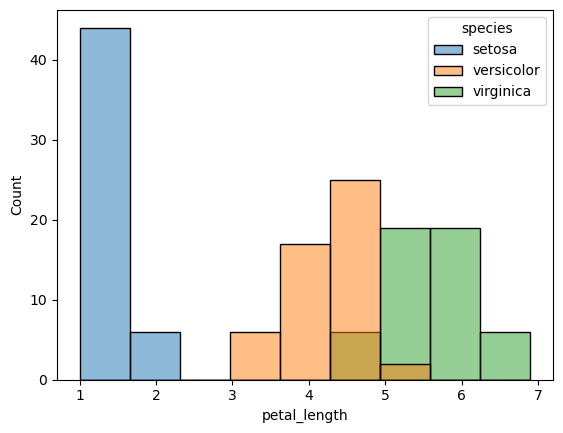
Gaussian kernel density estimate (KDE) plots
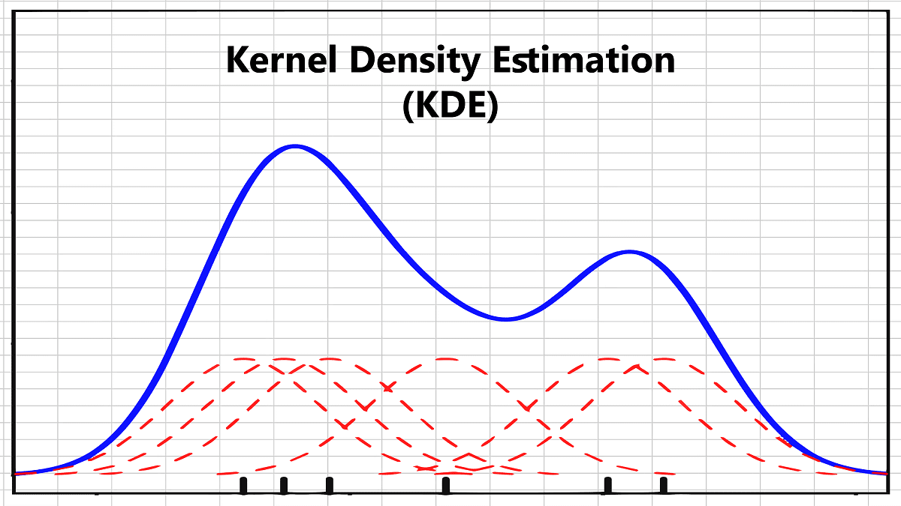
- A Gaussian kernel density estimate (KDE) plot is a smoothed, continuous version of a histogram.
- KDE assigns probability density function (PDF) \(f_\mathcal{N}(x_i,h^2)\) of normal distribution \(\mathcal{N}(x_i,h^2)\) to each data point \(x_i\).
- Plot mixture \(f\) of these individual PDFs: \[ f(x)=\frac{1}{nh}\sum_{i=1}^nf_{\mathcal{N}(x_i,h^2)}(x)=\frac{1}{nh}\sum_{i=1}^n\frac{1}{\sqrt{2\pi}}e^{-\frac{(x-x_i)^2}{2h^2}} \]
- \(\mathcal{N}(x_i,h^2)\) is centered at the data point \(x_i\) and has standard deviation \(h\) (“bandwidth” hyper-parameter).
- Too small \(h\): noisy plot, under-smoothing.
- Too large \(h\): small trends in data ignored, over-smoothing.
Example: petal length distribution shown in KDE plots with different bandwidths
mosaic = [
[3,3,3],
[0,1,2]
]
fig, axes = plt.subplot_mosaic(mosaic, figsize=(9, 4))
sns.kdeplot(data=df, x='petal_length', hue='species', ax=axes[3])
bws = [0.3,1,2]
for i, bw in enumerate(bws):
sns.kdeplot(data=df, x='petal_length', bw_adjust=bws[i], ax=axes[i])
axes[i].set_title(f'Bandwith\nscaling factor = {bw}')
fig.tight_layout()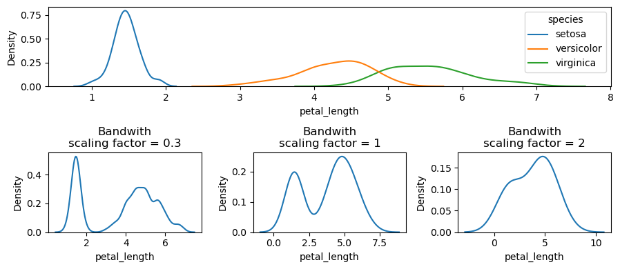
Box plots
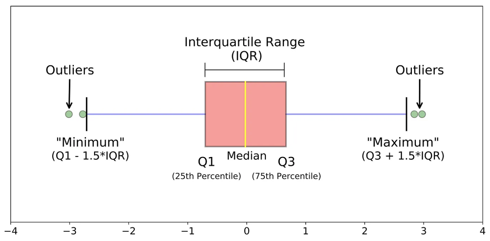
- The axis of the figure (can be horizontal or vertical) represents the data distribution.
- The box spans the interquartile range (IQR): from the first quartile (Q1) to the third quartile (Q3).
- The thick line inside the box marks the median of the data.
- Whiskers otpion 1: The whiskers extend to the minimum and maximum values within 1.5 times the IQR. Any points beyond the whiskers are considered outliers and are marked separately.
- Whiskers otpion 2: The whiskers extend to the minimum and maximum values of the data. No points beyond the whiskers.
Example: a simple box plot
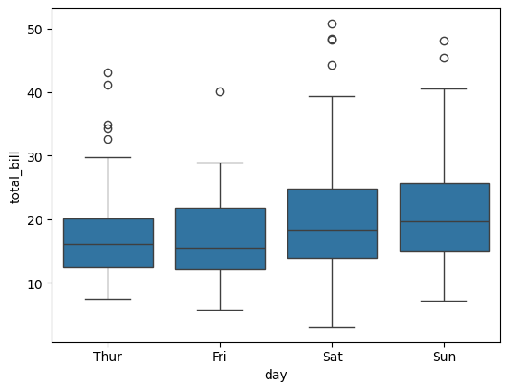
Violin plots
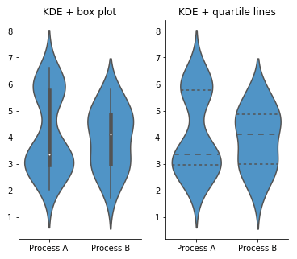
- Combination of a (simplified) box plot and a KDE plot.
- Displays the distribution of the data while preserving key summary statistics.
- Box plot or quartile lines inside: visualization of the median, quartiles, and possible outliers.
- KDE plot around the box plot: visualization of data density.
- Example: Violin plots visualize bimodality of the Process A data, which is not shown by the box plots alone.
- Note: KDE and violin plots can be misleading when Gaussian mixtures go beyond the range of the data or even the domain of the variable.
- Solution: Cut KDE plots at minimum and maximum values.
Example: a box plot and a violin plot of the same data
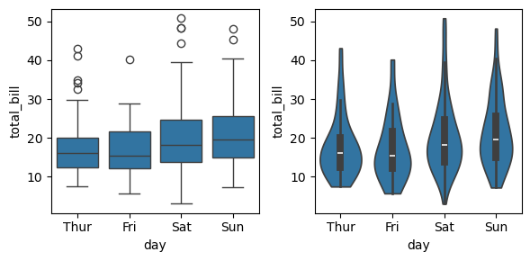
Exercise 1
Execute the code bellow to create a new dataframe that has shop’s visit time and days of visits. Then, make a simple boxplot where x is a day of week and y is visit time. Make a violin plot with the same setting. Which one is more informative? Why?
import numpy as np
import pandas as pd
mon = list(np.random.normal(9,1,20)) + list(np.random.normal(18,1,20))
tue = list(np.random.normal(8,1,20)) + list(np.random.normal(19,2,20))
wed = list(np.random.normal(18,2,40))
restaurant = pd.DataFrame([mon+tue+wed,["Monday"]*len(mon)+["Tuesday"]*len(tue)+["Wednesday"]*len(wed)])
restaurant = restaurant.T
restaurant.columns = ["visit_time", "day"]
restaurant["visit_time"] = restaurant["visit_time"].astype('float')
restaurant.head()| visit_time | day | |
|---|---|---|
| 0 | 9.000548 | Monday |
| 1 | 8.787832 | Monday |
| 2 | 8.892694 | Monday |
| 3 | 10.035697 | Monday |
| 4 | 8.250160 | Monday |
5 Visualizing relationships (between \(\geq 2\) variables or samples and variables)
2D scatter plots
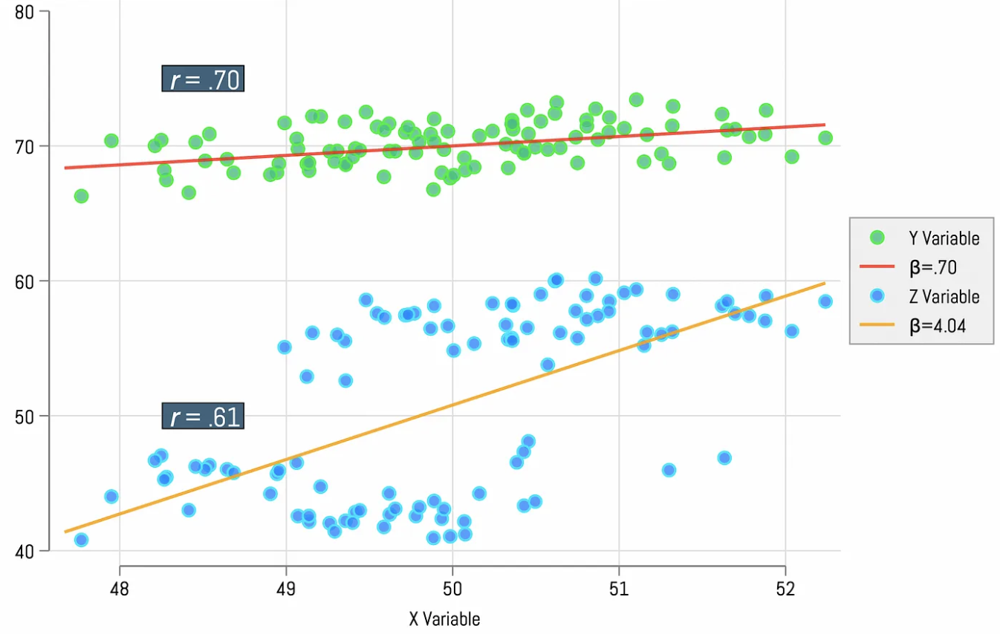
- Each point represents an observation, where the \(x\)-coordinate corresponds to one variable, and the \(y\)-coordinate corresponds to another.
- Helps to identify trends, correlations, or outliers between the two variables.
- Points that are close together: indicative of strong relationship.
- Spread-out points: suggest weaker relationships.
- Annotate with linear regression model: slope \(\beta\) quantifies effect size of linear relationship.
- Annotate with Pearson’s correlation coefficient \(r\): quantifies strength of linear relationship.
- Strength \(\neq\) effect size: Strength \(r=(\beta\sigma_\mathbf{x})/\sigma_\mathbf{y}\) positively proportional to \(\beta\) and standard deviation \(\sigma_\mathbf{x}\) of \(\mathbf{x}\) but negatively proportional to standard deviation \(\sigma_\mathbf{y}\) of \(\mathbf{y}\)
Example: 2D scatter plots with and without linear models
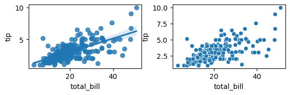
Exercise 2
- Load the dataset named diamonds. Make a relplot that shows the relationship between price and carat. Separate the results by a quality of a cut.
- The simple linear regression model used above is very simple to fit, however, it is not appropriate for some kinds of datasets. The Anscombe’s quartet dataset shows a few examples where simple linear regression provides an identical estimate of a relationship where simple visual inspection clearly shows differences. Load the anscombe dataset then slice it by the variable “dataset”, and find an appropreate fit for dataset I, II and III. Hint: Utilize the
orderparameter ofsns.regplotto estimate polynomial regression and therobustparameter to de-weight outliers.
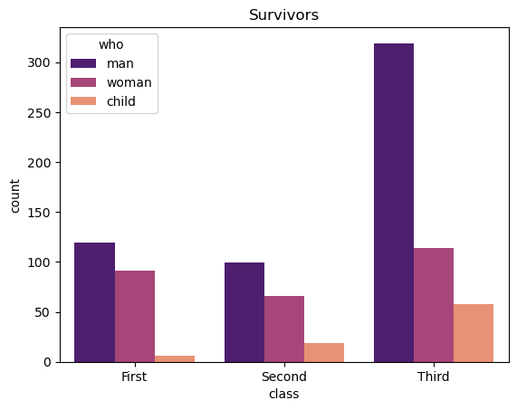
[Text(0, 0, 'Sao Tome and Principe'),
Text(1, 0, 'Papua New Guinea'),
Text(2, 0, 'Solomon Islands'),
Text(3, 0, 'Costa Rica'),
Text(4, 0, 'Malaysia'),
Text(5, 0, 'Brunei Darussalam'),
Text(6, 0, 'Indonesia'),
Text(7, 0, 'Panama'),
Text(8, 0, 'Bangladesh'),
Text(9, 0, 'Colombia')]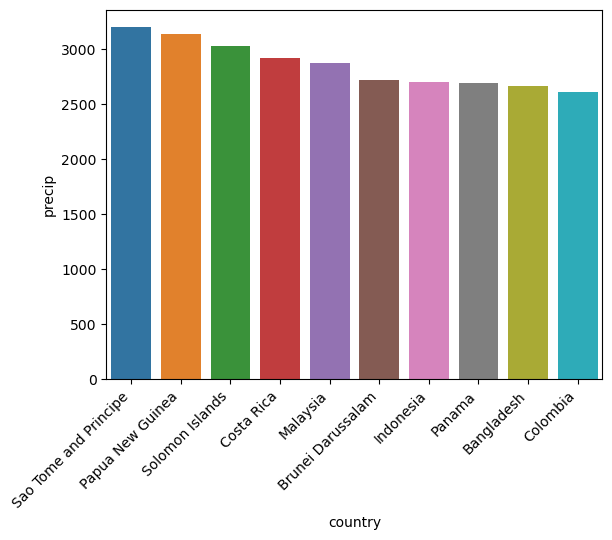
Heat maps
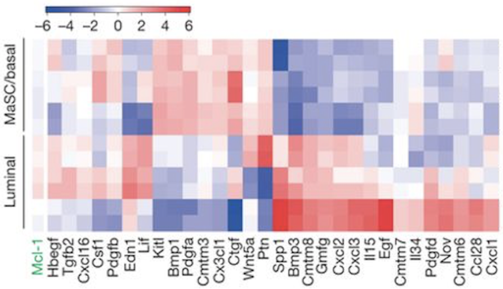
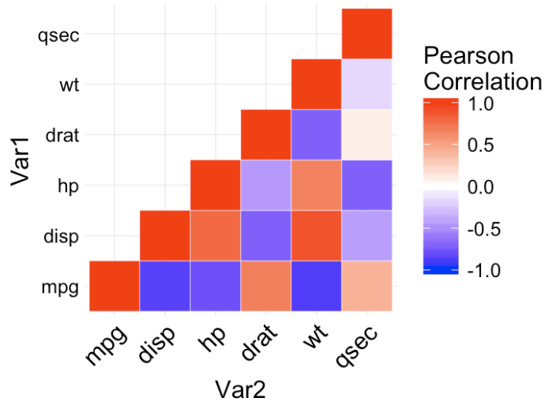
- 2D graphical representation of data where values are represented by colors.
- Heat maps are commonly used to visualize relationships between two or more variables, especially when dealing with large datasets.
- Heat maps can also be used to visualize relationships between samples and variables.
- Heat maps are especially useful for showing patterns, trends, and correlations across multiple variables.
- Sample \(\times\) variable heat maps: Each cell represents the value of a variable for a specific sample.
- Variable \(\times\) variables heat maps: Each cell represents a measure of correlation between two variables across several (or all) samples.
Example: numbers of passengers per months over 12 years
| year | month | passengers | |
|---|---|---|---|
| 0 | 1949 | Jan | 112 |
| 1 | 1949 | Feb | 118 |
| 2 | 1949 | Mar | 132 |
| 3 | 1949 | Apr | 129 |
| 4 | 1949 | May | 121 |
| year | 1949 | 1950 | 1951 | 1952 | 1953 | 1954 | 1955 | 1956 | 1957 | 1958 | 1959 | 1960 |
|---|---|---|---|---|---|---|---|---|---|---|---|---|
| month | ||||||||||||
| Jan | 112 | 115 | 145 | 171 | 196 | 204 | 242 | 284 | 315 | 340 | 360 | 417 |
| Feb | 118 | 126 | 150 | 180 | 196 | 188 | 233 | 277 | 301 | 318 | 342 | 391 |
| Mar | 132 | 141 | 178 | 193 | 236 | 235 | 267 | 317 | 356 | 362 | 406 | 419 |
| Apr | 129 | 135 | 163 | 181 | 235 | 227 | 269 | 313 | 348 | 348 | 396 | 461 |
| May | 121 | 125 | 172 | 183 | 229 | 234 | 270 | 318 | 355 | 363 | 420 | 472 |

Example: visualizing correlations between car accident properties
| total | speeding | alcohol | not_distracted | no_previous | ins_premium | ins_losses | abbrev | |
|---|---|---|---|---|---|---|---|---|
| 0 | 18.8 | 7.332 | 5.640 | 18.048 | 15.040 | 784.55 | 145.08 | AL |
| 1 | 18.1 | 7.421 | 4.525 | 16.290 | 17.014 | 1053.48 | 133.93 | AK |
| 2 | 18.6 | 6.510 | 5.208 | 15.624 | 17.856 | 899.47 | 110.35 | AZ |
| 3 | 22.4 | 4.032 | 5.824 | 21.056 | 21.280 | 827.34 | 142.39 | AR |
| 4 | 12.0 | 4.200 | 3.360 | 10.920 | 10.680 | 878.41 | 165.63 | CA |
| total | speeding | alcohol | not_distracted | no_previous | ins_premium | ins_losses | |
|---|---|---|---|---|---|---|---|
| total | 1.000000 | 0.611548 | 0.852613 | 0.827560 | 0.956179 | -0.199702 | -0.036011 |
| speeding | 0.611548 | 1.000000 | 0.669719 | 0.588010 | 0.571976 | -0.077675 | -0.065928 |
| alcohol | 0.852613 | 0.669719 | 1.000000 | 0.732816 | 0.783520 | -0.170612 | -0.112547 |
| not_distracted | 0.827560 | 0.588010 | 0.732816 | 1.000000 | 0.747307 | -0.174856 | -0.075970 |
| no_previous | 0.956179 | 0.571976 | 0.783520 | 0.747307 | 1.000000 | -0.156895 | -0.006359 |
| ins_premium | -0.199702 | -0.077675 | -0.170612 | -0.174856 | -0.156895 | 1.000000 | 0.623116 |
| ins_losses | -0.036011 | -0.065928 | -0.112547 | -0.075970 | -0.006359 | 0.623116 | 1.000000 |
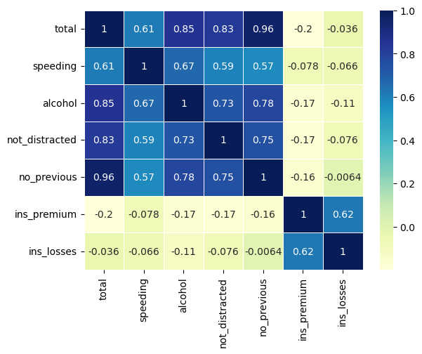
Exercise 3
Create a heatmap of flights happened between 1955 and 1960 (including both ends, use numpy/pandas for this). Play around with the parameters of sns.heatmap to change the look of the plot.
6 Solutions for exercises
| carat | cut | color | clarity | depth | table | price | x | y | z | |
|---|---|---|---|---|---|---|---|---|---|---|
| 0 | 0.23 | Ideal | E | SI2 | 61.5 | 55.0 | 326 | 3.95 | 3.98 | 2.43 |
| 1 | 0.21 | Premium | E | SI1 | 59.8 | 61.0 | 326 | 3.89 | 3.84 | 2.31 |
| 2 | 0.23 | Good | E | VS1 | 56.9 | 65.0 | 327 | 4.05 | 4.07 | 2.31 |
| 3 | 0.29 | Premium | I | VS2 | 62.4 | 58.0 | 334 | 4.20 | 4.23 | 2.63 |
| 4 | 0.31 | Good | J | SI2 | 63.3 | 58.0 | 335 | 4.34 | 4.35 | 2.75 |
pandas.core.frame.DataFrame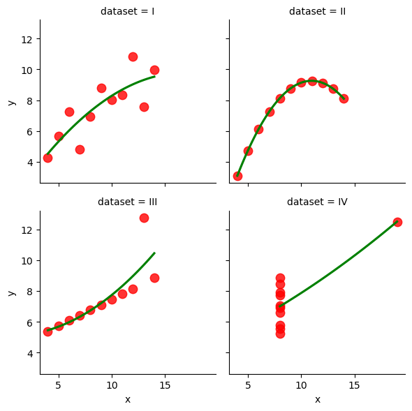
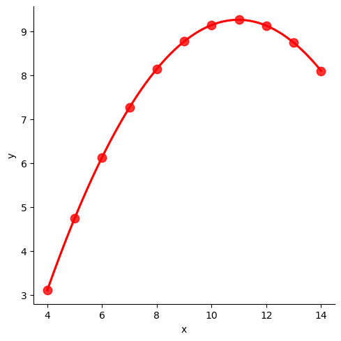
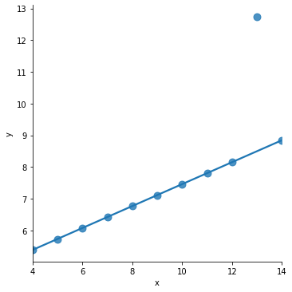
Violin plot is more informative as it shows bimodal nature of the data and allows us to conclude that on Mondays and Tuesdays the restaurant is mostly occupated in the morning and in the evening
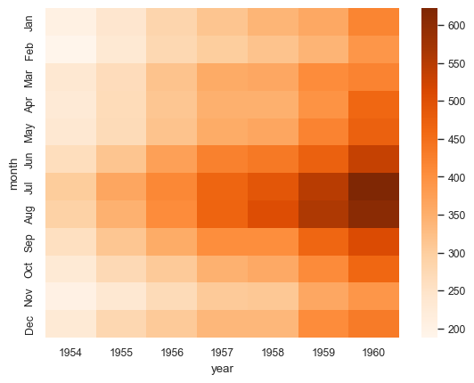

Practical Skills in Computational Biology